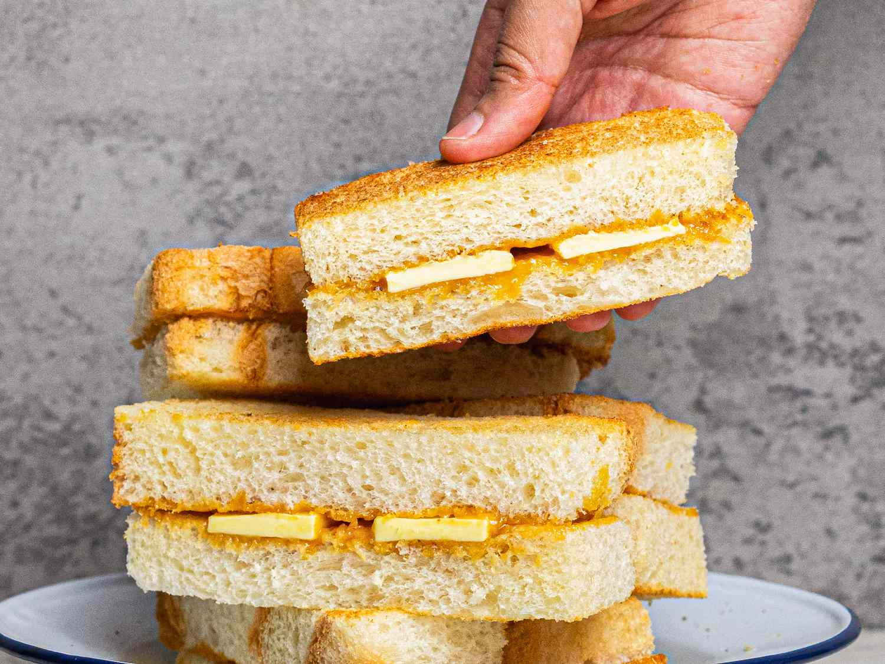

Kaya Toast
Kaya Toast is a beloved Malaysian snack, combining sweet, creamy kaya (coconut and egg jam) with buttery, crispy toast. Typically enjoyed for breakfast with soft-boiled eggs and a cup of coffee or tea, this simple yet flavorful dish is a staple in Malaysian cuisine.

| Recipe Details |
| Portion |
4 servings |
| Preparation Time |
15 minutes |
| Cooking Time |
5 minutes |
| Difficulty |
Easy |
| Meal Type |
Snack/Breakfast |
| Cuisine |
Malaysian |
| Nutrition Facts (per serving) |
| Calories |
350 kcal |
| Fat |
20g |
| Saturated Fat |
12g |
| Carbohydrates |
35g |
| Sugar |
18g |
| Protein |
7g |
Ingredients:
| Ingredients |
Measurement |
| White bread or wholemeal bread |
8 slices |
| Kaya (coconut egg jam) |
200 grams |
| Butter, room temperature |
100 grams |
| Soft-boiled eggs (optional) |
4 |
| White pepper |
to taste |
| Dark soy sauce |
for drizzling (optional) |
Instructions:
- Prepare the soft-boiled eggs (optional): Boil water in a pot, reduce to a simmer, add eggs gently, and cook for about 6 minutes. Transfer to cold water to stop cooking.
- Toast the bread slices until golden brown on both sides, using a toaster or pan over medium heat.
- Spread a generous amount of butter on one side of each toasted slice, then spread a thick layer of kaya on another slice.
- Press the buttered and kaya slices together to form a sandwich. Repeat for remaining slices.
- Cut the sandwich into halves or quarters for easy handling.
- Serve with optional soft-boiled eggs seasoned with white pepper and a drizzle of dark soy sauce.
- Enjoy the kaya toast with a hot cup of coffee or tea!